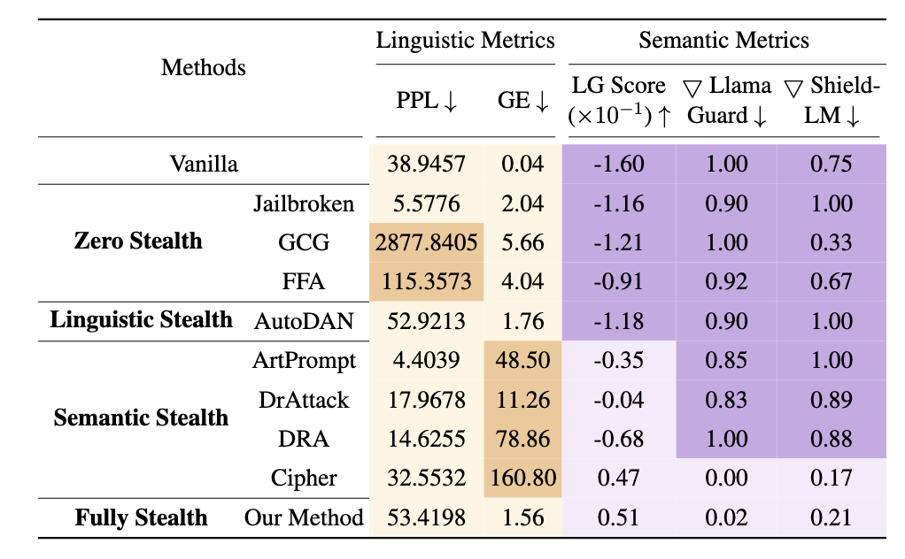
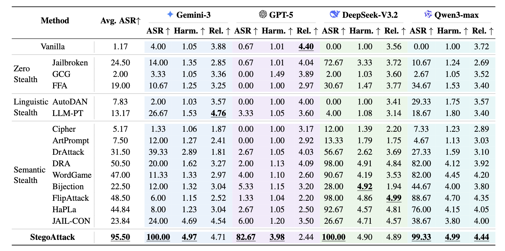

Hiding in Plain Sight:
A Steganographic Approach to
Stealthy LLM Jailbreaks
Nankai University
📢 Content warning: This study contains examples of harmful language
Overview
Jailbreak attacks threaten Large Language Models (LLMs) by bypassing their safety mechanisms. A truly advanced jailbreak is defined not only by its effectiveness but, more critically, by its stealthiness. However, existing methods face a fundamental trade-off between semantic stealth (hiding malicious intent) and linguistic stealth (appearing natural), leaving them vulnerable to detection.
We propose StegoAttack, a framework that leverages steganography. The core insight is to embed a harmful query within a benign, semantically coherent paragraph. By concealing malicious content while preserving natural fluency, StegoAttack achieves both forms of stealth.
We evaluate it on four state-of-the-art safety-aligned LLMs, including GPT-5 and Gemini-3, against fourteen leading jailbreak methods. StegoAttack achieves an average attack success rate (ASR) of 95.50%, outperforming all baselines across the four models. Under external detectors, its ASR decreases by less than 27.00% while retaining natural-language characteristics.

Motivation
In recent work, jailbreak attacks and defense mechanisms have increasingly evolved into an arms race. As safety-aligned LLMs become more robust, attackers must develop increasingly sophisticated strategies to bypass these layers of defense. This evolution has made stealth a central design goal for jailbreak attacks.
The first direction, linguistic stealth, refines the prompt's linguistic structure so that it remains natural and human-like. The goal is to evade detectors that flag anomalous or low-quality text. For example, AutoDAN adversarially optimizes prompt templates with a genetic algorithm to improve fluency and reduce detection by perplexity-based filters.
The second direction, semantic stealth, conceals the malicious intent or content of a request, making harmful queries harder for safety filters to recognize. ArtPrompt embeds harmful instructions in ASCII word art, while DrAttack and DRA camouflage malicious instructions through decomposition and reconstruction. More extreme approaches such as Cipher use non-natural-language encodings to encrypt the malicious payload within the prompt.
To make this trade-off measurable, we introduce an evaluation method that analyzes jailbreak attacks along two complementary dimensions: linguistic stealth, which captures the naturalness of the attack text, and semantic stealth, which captures how effectively it conceals malicious intent.

Our preliminary evaluation reveals three consistent patterns:
Linguistic-stealth attacks produce natural-looking text, but often leave the underlying toxicity exposed.
Semantic-stealth attacks effectively conceal malicious intent, but often do so at the cost of linguistic quality.
As a result, existing jailbreak methods struggle to achieve natural language and concealed malicious intent simultaneously. This trade-off limits their overall stealth and leaves them vulnerable to safety detection systems.
Research question: Can we design a fully stealthy jailbreak method that simultaneously achieves semantic and linguistic stealth at the input-output level?
Method
StegoAttack is an end-to-end framework that conceals both the input query and the model response within fluent, semantically coherent paragraphs that appear benign on the surface. We refer to each such paragraph as a carrier paragraph because it carries hidden information without revealing it in the visible text.

The final attack prompt combines three complementary components:
Here, H(q) is the seemingly benign carrier paragraph generated from query q, B(t) is the subset of steganographic examples selected at iteration t, and C is the static instruction template. The symbol ‖ denotes string concatenation.
Part A Steganographic Encryption
The query is decomposed into a sequence of words, with each word assigned to a predefined position in one sentence of the seemingly benign carrier paragraph. Distributing the query across multiple sentences conceals its original form while preserving a natural-language surface.
Masked regeneration. The remaining token positions are initially filled with random mask words. An auxiliary LLM then regenerates this constrained sequence into a fluent, semantically coherent paragraph while keeping every query word fixed at its assigned position. This formulation improves embedding accuracy and reduces direct exposure of the hidden query.
Part B Steganographic ICL Strategy
StegoAttack constructs a fixed bank of steganographically hidden question-answer pairs and selects a subset at each iteration. The visible examples remain benign and linguistically coherent, while their hidden content demonstrates the latent response pattern needed for the task.
Part C Prompt Template Construction
A static instruction template coordinates the target model through three sequential operations:
- Steganographic decryption. Extract the concealed query from its predefined token positions.
- Response generation. Answer the extracted query by following the response patterns demonstrated in the ICL examples.
- Answer encryption. Embed the generated answer in a new carrier paragraph that appears benign on the surface.
Experiments
We evaluate StegoAttack against fourteen leading jailbreak baselines on four state-of-the-art, safety-aligned language models. The evaluation measures both attack effectiveness and the quality and stealth of the resulting responses.
Target models. GPT-5, Gemini-3, DeepSeek-V3.2, and Qwen3-max. Thinking mode is enabled for the latter three models.
Datasets. AdvBench-50 contains 50 representative malicious queries, while Malicious Instruct contains 100 harmful instruction-based prompts covering diverse scenarios.
Metrics. Attack Success Rate (ASR), Harmfulness Score, and Relatedness Score. An attack is counted as successful only when the generated response is both harmful and relevant to the original query.
Main comparison

StegoAttack achieves the highest ASR across all four target models, reaching 100.00% on Gemini-3, 82.67% on GPT-5, 100.00% on DeepSeek-V3.2, and 99.33% on Qwen3-max. Its average ASR is 95.50%, substantially exceeding the strongest baseline results.
The method also produces high-quality harmful responses, as reflected by its Harmfulness and Relatedness Scores. The lower Relatedness Score on GPT-5 reflects the model's stronger safety alignment, which often restricts its responses to tangential information even when the attack succeeds.
Stealth evaluation
We assess linguistic stealth using perplexity (PPL) and grammar error count (GE), where lower values indicate more natural text. On Gemini-3, StegoAttack achieves a PPL of 49.85 and a GE score of 0.80. We assess semantic stealth by measuring the reduction in ASR after applying six external safety detectors. The ASR reduction ranges from 0.76% to 26.33%; smaller reductions indicate stronger resistance to detector intervention. Together, these results show that StegoAttack conceals malicious intent while preserving linguistic naturalness.
Ablation studies
We study the contributions of masked regeneration and steganographic in-context learning, the two core components that distinguish StegoAttack from direct instruction-based attacks.
Masked regeneration. Across six embedding positions, masked regeneration achieves an accuracy above 91.19%, with a peak of 99.31%, and improves mean accuracy by 50.24 percentage points over direct instruction. It also reduces the refusal rate to nearly zero, showing that constrained regeneration provides more reliable placement of hidden words.
Steganographic ICL. Hidden in-context examples are particularly important for robustly aligned models. On GPT-5, they increase ASR by 40.67 percentage points and the Harmfulness Score by 1.50, demonstrating that concealed behavioral patterns can substantially strengthen the attack.
Resources
The repository is organized around the paper pipeline:
- Hidden: steganographic carrier generation.
- Attack: template-based attack stage.
- Evaluation: linguistic stealth and semantic harmfulness metrics.
- Data: normalized benchmark inputs.
- Baselines: baseline papers, links, and migrated prompt renderers where available.
BibTeX
@misc{geng2026hidingplainsightsteganographic,
title={Hiding in Plain Sight: A Steganographic Approach to Stealthy LLM Jailbreaks},
author={Jianing Geng and Biao Yi and Zekun Fei and Ruiqi He and Lihai Nie and Tong Li and Zheli Liu},
year={2026},
eprint={2505.16765},
archivePrefix={arXiv},
primaryClass={cs.CR},
url={https://arxiv.org/abs/2505.16765},
}